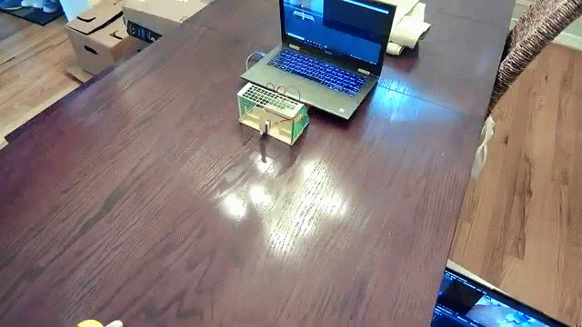

Rhino Rover: Voice-Controlled ESP Bot
Runs an LLM locally to understand microphone input, then responds through movement, sensors, or conversational audio
Incoming engineer @ UT Austin interested in robotics, machine learning, and sports
Photos, clips, and notes from projects I’ve worked on
Runs an LLM locally to understand microphone input, then responds through movement, sensors, or conversational audio

Inspired by WC2026: Uses HSV filtering and contour detection to track ball, determine its direction, and actuate a servo to block

Uses PID control based on IMU feedback to balance. I tuned the controller and iterated from a popsicle-stick chassis to a 3D-printed frame
Inspired by track teammates' shin splints: researched and prototyped a biomechanical device intended to reduce impact forces during running
Create, view, and share augmented-reality models from a phone browser by uploading images of the object you want to model
I’m starting Mechanical Engineering at UT Austin in Fall 2026 and plan to pursue a robotics minor. I'm ambitious and like to take the initiative, which I back with hard work and discipline. I'm currently building my skills in robotics and also machine learning, taking Andrew Ng's ML Course.
Outside of engineering, I love to be outdoors and active: playing tennis, running, and going to the gym.
Contact at: nachi (dot) gulati [at] gmail (dot) com